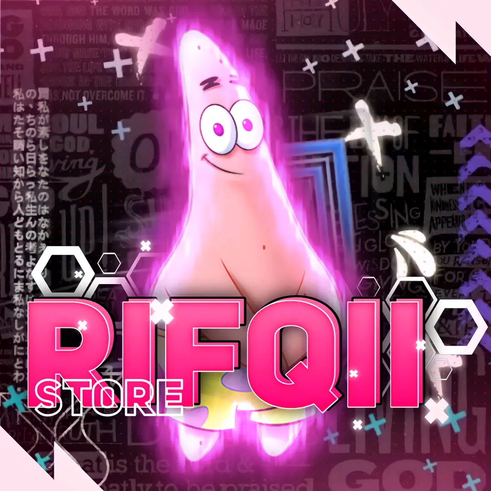

Aktifkan musik latar untuk pengalaman yang lebih menyenangkan?

Terima kasih telah mengunjungi vvip.rifqiistore.shop
Kami telah memindahkan layanan kami ke domain baru:
Anda akan dialihkan secara otomatis dalam 30 detik...